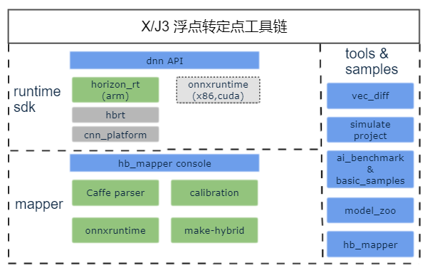
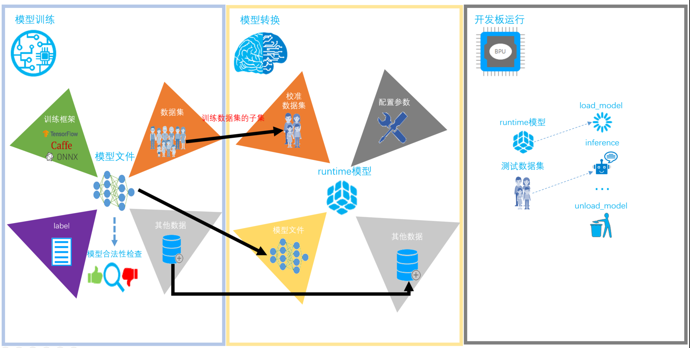

1. 产品介绍
1.1. 工具链总览
地平线芯片工具链（以下简称 工具链）是一套完整的边缘AI算法落地解决方案，可以帮助您在地平线AI芯片上快速部署自研算法模型。 工具链由模型转换和嵌入式运行环境等部分组成，其软件逻辑框图如下：
mapper部分提供了模型转换能力。通过公开DL框架获得的浮点模型，可以使用功能域转换为地平线AI芯片可识别的异构模型。
runtime sdk提供了异构模型的运行库支持，当前release版本只包含arm版本支持。
1.2. 工具链使用流程
使用工具链的基本工作流程如下图：
环境部署，用于构建模型转换和应用开发的依赖环境，这个动作只需要在您第一次工具链时做一遍即可。 具体部署方式请参考 环境部署。
模型训练，指使用TensorFlow、PyTorch、Caffe等公开深度学习框架得到可用模型的过程，通过训练得到的可用模型将作为模型转换阶段的输入。 工具链本身不会提供训练相关的库或工具，具体支持的公开学习框架可以参考 模型转换 的说明。
模型转换，本阶段以模型训练得到的浮点模型为输入，通过模型结构优化、模型校准量化等重要步骤， 将浮点模型转换为可以在地平线AI芯片平台高效运行的混合异构模型。 为了验证异构模型的可用性，工具链还提供了性能分析、精度分析和丰富的异常调试工具与建议。 具体使用请参考 模型转换。
算子开发，本阶段是一个可选阶段，主要是解决模型存在工具链不支持算子的情况，如果您没有此种情况，可以直接忽略本阶段的处理。 具体使用方式请参考 自定义算自开发 。
应用开发，工具链支持真实嵌入式环境的应用开发能力，具体使用方式 请参考 应用开发 。